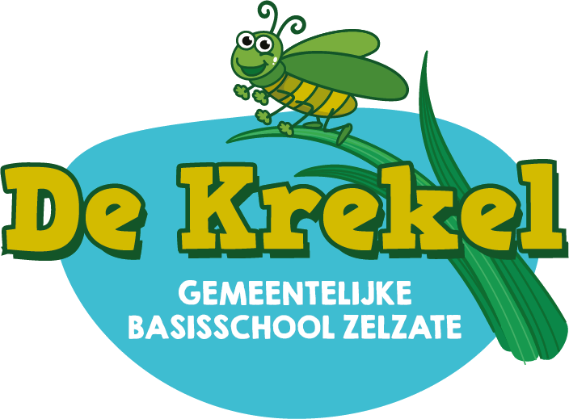

ICT-ambitie en MoSCoW-analyse voor het onderwijs
Schoolpopulatie en omgevingsanalyse
Inventaris, middelen en SWOT-analyse
Concrete doelen, trekkers en deadlines
Gelijke digitale kansen voor elk kind
Groeiplan van het team op basis van DigCompEdu
Wie doet wat: rollen en taken in het ICT-team
Richtlijnen voor verantwoord AI-gebruik